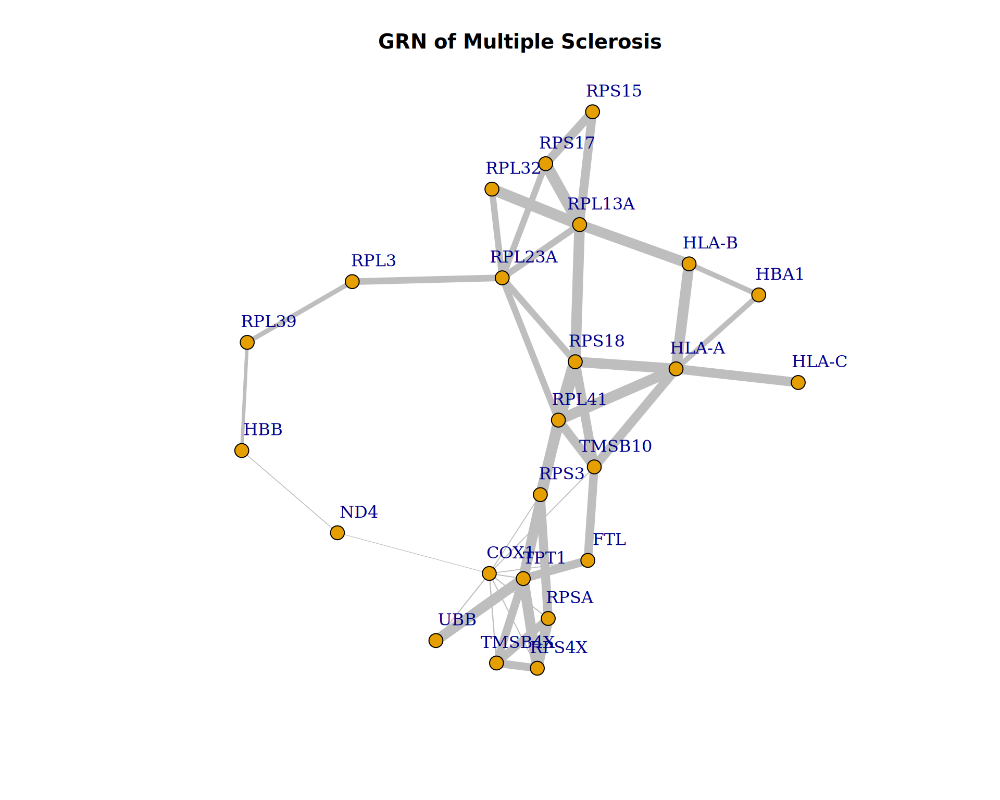

Reconstructing GRN with GEO datasets for Multiple Sclerosis
Author
Adnan Raza
Introduction
Multiple sclerosis (MS) is a complex and debilitating neurological disorder that affects millions of people worldwide. As a student of bioinformatics with a keen interest in genomics and computational biology, I chose to explore MS for my assignment due to its intricate genetic and environmental interactions. The disease’s multifactorial nature makes it a compelling subject for bioinformatics-driven investigations, such as transcriptomic and genomic analyses, which can provide insights into disease progression, potential biomarkers, and therapeutic targets.
MS is an autoimmune condition where the immune system mistakenly attacks the myelin sheath surrounding nerve fibers, leading to inflammation, neurodegeneration, and progressive disability (Dobson & Giovannoni, 2019). Despite extensive research, the exact etiology of MS remains elusive, necessitating continued exploration using modern computational techniques. By leveraging high-throughput sequencing data and machine learning algorithms, bioinformatics plays a crucial role in identifying genetic variants, transcriptomic changes, and molecular pathways involved in MS pathogenesis (Baranzini & Oksenberg, 2017).
Furthermore, given the increasing accessibility of publicly available transcriptomic datasets, studying MS offers an opportunity to apply data science methodologies to real-world biomedical challenges. This assignment aims to integrate bioinformatics tools to analyze MS-related gene expression patterns, contributing to a deeper understanding of its molecular basis.
Methodology
Package Installation and Setup
# if (!require("BiocManager", quietly = TRUE))# install.packages("BiocManager")# BiocManager::install(version = "3.20")# install.packages("tidyverse")library(tidyverse) # For data manipulation
── Attaching core tidyverse packages ──────────────────────── tidyverse 2.0.0 ──
✔ dplyr 1.1.4 ✔ readr 2.1.5
✔ forcats 1.0.0 ✔ stringr 1.5.1
✔ ggplot2 3.5.1 ✔ tibble 3.2.1
✔ lubridate 1.9.4 ✔ tidyr 1.3.1
✔ purrr 1.0.4
── Conflicts ────────────────────────────────────────── tidyverse_conflicts() ──
✖ dplyr::filter() masks stats::filter()
✖ dplyr::lag() masks stats::lag()
ℹ Use the conflicted package (<http://conflicted.r-lib.org/>) to force all conflicts to become errors
# BiocManager::install("GEOquery")library(GEOquery) # For retrieving GEO datasets
Loading required package: Biobase
Loading required package: BiocGenerics
Attaching package: 'BiocGenerics'
The following objects are masked from 'package:lubridate':
intersect, setdiff, union
The following objects are masked from 'package:dplyr':
combine, intersect, setdiff, union
The following objects are masked from 'package:stats':
IQR, mad, sd, var, xtabs
The following objects are masked from 'package:base':
anyDuplicated, aperm, append, as.data.frame, basename, cbind,
colnames, dirname, do.call, duplicated, eval, evalq, Filter, Find,
get, grep, grepl, intersect, is.unsorted, lapply, Map, mapply,
match, mget, order, paste, pmax, pmax.int, pmin, pmin.int,
Position, rank, rbind, Reduce, rownames, sapply, saveRDS, setdiff,
table, tapply, union, unique, unsplit, which.max, which.min
Welcome to Bioconductor
Vignettes contain introductory material; view with
'browseVignettes()'. To cite Bioconductor, see
'citation("Biobase")', and for packages 'citation("pkgname")'.
Setting options('download.file.method.GEOquery'='auto')
Setting options('GEOquery.inmemory.gpl'=FALSE)
# BiocManager::install("DESeq2")library(DESeq2) # For gene expression dataset normalization and filtering
Loading required package: S4Vectors
Loading required package: stats4
Attaching package: 'S4Vectors'
The following objects are masked from 'package:lubridate':
second, second<-
The following objects are masked from 'package:dplyr':
first, rename
The following object is masked from 'package:tidyr':
expand
The following object is masked from 'package:utils':
findMatches
The following objects are masked from 'package:base':
expand.grid, I, unname
Loading required package: IRanges
Attaching package: 'IRanges'
The following object is masked from 'package:lubridate':
%within%
The following objects are masked from 'package:dplyr':
collapse, desc, slice
The following object is masked from 'package:purrr':
reduce
Loading required package: GenomicRanges
Loading required package: GenomeInfoDb
Loading required package: SummarizedExperiment
Loading required package: MatrixGenerics
Loading required package: matrixStats
Attaching package: 'matrixStats'
The following objects are masked from 'package:Biobase':
anyMissing, rowMedians
The following object is masked from 'package:dplyr':
count
Attaching package: 'MatrixGenerics'
The following objects are masked from 'package:matrixStats':
colAlls, colAnyNAs, colAnys, colAvgsPerRowSet, colCollapse,
colCounts, colCummaxs, colCummins, colCumprods, colCumsums,
colDiffs, colIQRDiffs, colIQRs, colLogSumExps, colMadDiffs,
colMads, colMaxs, colMeans2, colMedians, colMins, colOrderStats,
colProds, colQuantiles, colRanges, colRanks, colSdDiffs, colSds,
colSums2, colTabulates, colVarDiffs, colVars, colWeightedMads,
colWeightedMeans, colWeightedMedians, colWeightedSds,
colWeightedVars, rowAlls, rowAnyNAs, rowAnys, rowAvgsPerColSet,
rowCollapse, rowCounts, rowCummaxs, rowCummins, rowCumprods,
rowCumsums, rowDiffs, rowIQRDiffs, rowIQRs, rowLogSumExps,
rowMadDiffs, rowMads, rowMaxs, rowMeans2, rowMedians, rowMins,
rowOrderStats, rowProds, rowQuantiles, rowRanges, rowRanks,
rowSdDiffs, rowSds, rowSums2, rowTabulates, rowVarDiffs, rowVars,
rowWeightedMads, rowWeightedMeans, rowWeightedMedians,
rowWeightedSds, rowWeightedVars
The following object is masked from 'package:Biobase':
rowMedians
# install.packages("igraph")library(igraph) # For network graph construction
Attaching package: 'igraph'
The following object is masked from 'package:GenomicRanges':
union
The following object is masked from 'package:IRanges':
union
The following object is masked from 'package:S4Vectors':
union
The following objects are masked from 'package:BiocGenerics':
normalize, path, union
The following objects are masked from 'package:lubridate':
%--%, union
The following objects are masked from 'package:dplyr':
as_data_frame, groups, union
The following objects are masked from 'package:purrr':
compose, simplify
The following object is masked from 'package:tidyr':
crossing
The following object is masked from 'package:tibble':
as_data_frame
The following objects are masked from 'package:stats':
decompose, spectrum
The following object is masked from 'package:base':
union
# install.packages("data.table")library(data.table) # For efficient data handling
Attaching package: 'data.table'
The following object is masked from 'package:SummarizedExperiment':
shift
The following object is masked from 'package:GenomicRanges':
shift
The following object is masked from 'package:IRanges':
shift
The following objects are masked from 'package:S4Vectors':
first, second
The following objects are masked from 'package:lubridate':
hour, isoweek, mday, minute, month, quarter, second, wday, week,
yday, year
The following objects are masked from 'package:dplyr':
between, first, last
The following object is masked from 'package:purrr':
transpose
1 Dataset Retrieval and Preprocessing
GEOquery is used to download datasets using their accession IDs.
The dataset is converted into an expression matrix.
Metadata is processed to map probe IDs to gene symbols.
Genes with multiple probe IDs are aggregated by averaging expression values.
Missing values are handled by replacing them with zero to maintain matrix integrity.
# Function to load and preprocess GEO datasetload_dataset <-function(accession_id) {cat("Retrieving", accession_id, "from GEO.\n")# Retrieve GEO dataset gds <-getGEO(accession_id) gds_set <-GDS2eSet(gds)# Extract gene expression matrix expression <-exprs(gds_set)# Extract and clean metadata (gene annotations) annot <-fData(gds_set) annot <- annot[, c("ID", "Gene symbol")]# Ensure that if multiple gene symbols are listed, only the last one is retained annot$`Gene symbol`<-sapply(str_split(annot$`Gene symbol`, "///"), function(x) trimws(tail(x, 1)))# Convert expression matrix into a tidy dataframe expression_df <-as.data.frame(expression) |>rownames_to_column(var ="Probe_ID") |>merge(annot, by.x ="Probe_ID", by.y ="ID", all.x =TRUE) |>drop_na(`Gene symbol`) |>select(-Probe_ID) |>group_by(`Gene symbol`) |>summarise(across(where(is.numeric), \(x) mean(x, na.rm =TRUE))) |># Aggregate probes by averaging expressioncolumn_to_rownames(var ="Gene symbol")# Remove genes that have all missing values across samples expression_df <- expression_df[(rowSums(is.na(expression_df)) <ncol(expression_df)) &row.names(expression_df) !="", ]# Replace remaining NA values with 0 for consistency expression_df[is.na(expression_df)] <-0cat("Loaded", accession_id, "as a dataframe.\n")return(expression_df)}# Load multiple GEO datasets and store them in a listdatasets <-list(load_dataset("GDS4994"),load_dataset("GDS4218"),load_dataset("GDS3920"),load_dataset("GDS4152"),load_dataset("GDS4151"),load_dataset("GDS3886"),load_dataset("GDS4150"),load_dataset("GDS4147"),load_dataset("GDS4146"),load_dataset("GDS4145"),load_dataset("GDS4142"),load_dataset("GDS2978"),load_dataset("GDS2419"))
Retrieving GDS4994 from GEO.
Loaded GDS4994 as a dataframe.
Retrieving GDS4218 from GEO.
Using locally cached version of GPL570 found here:
/tmp/RtmpMG1AHp/GPL570.annot.gz
Loaded GDS4218 as a dataframe.
Retrieving GDS3920 from GEO.
Using locally cached version of GPL570 found here:
/tmp/RtmpMG1AHp/GPL570.annot.gz
Loaded GDS3920 as a dataframe.
Retrieving GDS4152 from GEO.
Using locally cached version of GPL570 found here:
/tmp/RtmpMG1AHp/GPL570.annot.gz
Loaded GDS4152 as a dataframe.
Retrieving GDS4151 from GEO.
Loaded GDS4151 as a dataframe.
Retrieving GDS3886 from GEO.
Using locally cached version of GPL6244 found here:
/tmp/RtmpMG1AHp/GPL6244.annot.gz
Loaded GDS3886 as a dataframe.
Retrieving GDS4150 from GEO.
Using locally cached version of GPL570 found here:
/tmp/RtmpMG1AHp/GPL570.annot.gz
Loaded GDS4150 as a dataframe.
Retrieving GDS4147 from GEO.
Using locally cached version of GPL570 found here:
/tmp/RtmpMG1AHp/GPL570.annot.gz
Loaded GDS4147 as a dataframe.
Retrieving GDS4146 from GEO.
Loaded GDS4146 as a dataframe.
Retrieving GDS4145 from GEO.
Loaded GDS4145 as a dataframe.
Retrieving GDS4142 from GEO.
Using locally cached version of GPL570 found here:
/tmp/RtmpMG1AHp/GPL570.annot.gz
Loaded GDS4142 as a dataframe.
Retrieving GDS2978 from GEO.
Using locally cached version of GPL96 found here:
/tmp/RtmpMG1AHp/GPL96.annot.gz
Loaded GDS2978 as a dataframe.
Retrieving GDS2419 from GEO.
Loaded GDS2419 as a dataframe.
2 Data Normalization
If datasets are not normalized, DESeq2 is used to apply variance-stabilizing transformation (VST).
Highly variable genes (top 0.1%) are selected to focus on biologically significant changes.
# Function to filter top 0.1% most variable genes in the merged datasetfilter_top_variable_genes <-function(expression, variance =0.999) { expression_matrix <-as.matrix(expression) # Ensure matrix format# Ensure row names exist and store themif (is.null(rownames(expression_matrix))) {stop("Error: Row names (gene symbols) are missing in the dataset!") } gene_symbols <-rownames(expression_matrix)# Calculate variance across genes rv_wpn <-rowVars(expression_matrix)# Select top 0.1% most variable genes q_wpn <-quantile(rv_wpn, variance) selected_genes <- rv_wpn > q_wpn # Logical vector of selected genes# Apply filtering and explicitly assign row names expr_filtered <- expression_matrix[selected_genes, , drop =FALSE]# Explicitly ensure rownames are character strings, not numericrownames(expr_filtered) <-as.character(gene_symbols[selected_genes])return(expr_filtered)}# Function to normalize gene expression datanormalize_expression <-function(expression) {# Explicitly ensure gene symbols are character type before any processingif (!is.null(rownames(expression))) { gene_symbols <-as.character(rownames(expression)) } else {stop("Error: Input data must have gene symbols as row names!") }# If dataset is already normalized, skip DESeq2 processing but still filterif (max(expression) <100) { message("Dataset appears to be pre-normalized. Skipping DESeq2 processing.") result <-filter_top_variable_genes(expression)# Explicitly ensure rownames are preserved as characterrownames(result) <-as.character(rownames(result))return(result) }# Ensure integer values for DESeq2 processing de_input <-round(expression)# Create DESeq2 dataset for normalization dds <-DESeqDataSetFromMatrix(countData = de_input, colData =data.frame(row.names =colnames(de_input)), design =~1 )# Explicitly set rownames of dds to the original gene symbolsrownames(dds) <- gene_symbols# Estimate size factors for normalization dds <-estimateSizeFactors(dds)# Handle potential errors in DESeq processingtryCatch({ dds <-DESeq(dds) }, error =function(e) {message("Standard DESeq dispersion estimation failed. Using gene-wise dispersion estimates...") dds <-estimateDispersionsGeneEst(dds)dispersions(dds) <-mcols(dds)$dispGeneEst })# Apply variance-stabilizing transformation wpn_vsd <-getVarianceStabilizedData(dds)# Explicitly ensure rownames are preserved as characterrownames(wpn_vsd) <-as.character(gene_symbols) result <-filter_top_variable_genes(wpn_vsd)return(result)}
3 Merging Multiple Datasets
Expression matrices from multiple datasets are merged based on gene symbols.
Data tables (data.table) are used to efficiently combine large matrices.
After merging, a normalization step is applied to remove batch effects.
# Function to merge multiple datasets into a single matrixmerge_expression_data <-function(datasets) {# Convert each dataset into a data.table for efficient merging datasets <-lapply(datasets, function(df) setDT(as.data.frame(df), keep.rownames =TRUE))# Merge all datasets on gene names using an outer join merged_data <-Reduce(function(x, y) merge(x, y, by ="rn", all =TRUE), datasets)# Convert back to data frame and set gene names as row names merged_data <-as.data.frame(merged_data)rownames(merged_data) <- merged_data$rn merged_data$rn <-NULL# Remove redundant columnreturn(merged_data)}# Merge all datasets into a single matrixmerged_expression <-merge_expression_data(datasets)merged_expression[is.na(merged_expression)] <-0nm_expression <-normalize_expression(merged_expression)
converting counts to integer mode
Warning in DESeq(dds): the design is ~ 1 (just an intercept). is this intended?
using pre-existing size factors
estimating dispersions
gene-wise dispersion estimates
mean-dispersion relationship
final dispersion estimates
fitting model and testing
-- replacing outliers and refitting for 367 genes
-- DESeq argument 'minReplicatesForReplace' = 7
-- original counts are preserved in counts(dds)
estimating dispersions
fitting model and testing
# Check dimensions and summary of merged datasetdim(nm_expression)
[1] 24 422
Network Construction
1 Mutual Information Calculation
The Mutual Information Matrix (MIM) is calculated using the minet package.
This captures statistical dependencies between gene expression profiles.
# Transpose the matrix for network inferencenormalized_expression <-t(nm_expression)# Compute Mutual Information Matrix for gene-gene interactionsmi_matrix <- minet::build.mim(normalized_expression)
2 Network Inference
The ARACNe algorithm is applied to infer gene-gene interactions.
Weak interactions (below a threshold) are removed to retain strong regulatory relationships.
The result is an adjacency matrix where edges represent inferred regulatory interactions.
# Infer regulatory interactions using ARACNe algorithm with stricter thresholdingnetwork <- minet::aracne(mi_matrix, eps =0.05)
3 Network Graph Construction
The adjacency matrix is converted into an edge list for visualization.
The network is modeled using igraph, treating genes as nodes and interactions as edges.
A force-directed layout (Fruchterman-Reingold) is used for graph visualization.
# Extract edges from the adjacency matrixnetwork_edges <-which(network !=0, arr.ind =TRUE) |>as.data.frame() |>setNames(c("Gene1", "Gene2")) |>distinct(Gene1, Gene2, .keep_all =TRUE)# Convert row indices to gene namesnetwork_edges$Gene1 <-rownames(nm_expression)[network_edges$Gene1]network_edges$Gene2 <-rownames(nm_expression)[network_edges$Gene2]# Assign edge weights based on interaction strengthnetwork_edges$Weight <- network[cbind(network_edges$Gene1, network_edges$Gene2)]# Ensure unique edges by ordering gene pairs alphabeticallynetwork_edges <- network_edges |>mutate(Gene1 =pmin(Gene1, Gene2),Gene2 =pmax(Gene1, Gene2) ) |>distinct(Gene1, Gene2, .keep_all =TRUE) |>filter(Gene1 != Gene2) # Remove self-interactions# Display final network sizedim(network_edges)
[1] 46 3
# Construct the gene interaction graphgraph <-graph_from_data_frame(network_edges, directed =FALSE)# Compute edge density (indicates network sparsity)cat("Edge Density:", edge_density(graph))
Edge Density: 0.1666667
Visualization and Analysis
1 Network Visualization
Nodes represent genes, and edges represent inferred regulatory interactions.
Edge width is scaled based on interaction strength.
Self-loops are removed to focus on inter-gene interactions.
# Visualize the network graphplot(graph, layout =layout_with_fr(graph), # Force-directed layout for better visualizationvertex.size =5,vertex.label.dist =1.5,edge.width = network_edges$Weight *5, # Scale edge width based on interaction strengthmain ="GRN of Multiple Sclerosis",margin =0,edge.color ="gray")

2 Topological Analysis
Node Degree – Measures how many connections each gene has.
Betweenness Centrality – Identifies genes that act as bridges between communities.
Closeness Centrality – Determines how easily a gene can influence others.
Clustering Coefficient – Measures local connectivity (tendency to form clusters).
Network Density – Indicates how interconnected the network is.
Community Detection – Identifies functional gene clusters using fast-greedy clustering.
Network Diameter – Longest shortest path in the network, showing maximum interaction distance.
Assortativity – Measures whether highly connected genes tend to interact with other highly connected genes.
Hub genes are highly connected nodes with potential biological significance.
Removing hub genes tests how robust the network remains.
graph_no_hubs <-delete_vertices(graph, names(top_degree))cat("New Network Size After Hub Removal:", vcount(graph_no_hubs), "\n")
New Network Size After Hub Removal: 14
Results and Discussion
The gene regulatory network (GRN) analysis reveals a sparse yet well-structured network, consisting of 24 nodes and 46 edges, with an edge density of 0.1667. Compared to previous iterations, this refined network maintains a hub-centric topology, while also exhibiting an increase in connectivity and clustering.
🔹 Key Findings:
Hubs & Connectivity:COX1 (degree = 9) emerges as the most connected hub, while genes like HLA-A, RPL13A, and RPL23A (degree = 6) act as critical secondary nodes.
Centrality & Influence: High betweenness values for COX1 (61.95) and HLA-A (61.73) suggest their roles as major information flow regulators in the network.
Community Structure: The detection of 4 distinct communities implies the presence of functionally distinct gene modules, hinting at underlying biological processes.
Network Efficiency: With an average path length of 2.69 and diameter of 5, the network exhibits small-world properties, allowing efficient information propagation.
Robustness: The negative assortativity (-0.1542) suggests a hierarchical structure where hubs preferentially connect to low-degree nodes, a hallmark of biological networks.
Clustering & Modularity: The clustering coefficient of 0.3729 indicates a moderate level of local connectivity, reflecting modular functional interactions.
🔹 Impact of Hub Removal:
Upon removing key hub genes, the network size reduces to 14 nodes, reinforcing the importance of hubs in maintaining network integrity. This suggests that disrupting these highly connected genes could significantly affect the system’s overall functionality.
Conclusion
The constructed gene regulatory network (GRN) exhibits a hub-centric, modular, and small-world topology, with 24 nodes and 46 edges at an edge density of 0.1667. Key hub genes like COX1 (degree = 9), HLA-A, RPL13A, and RPL23A (degree = 6) play central roles in network connectivity, as reflected in their high betweenness centrality (max = 61.95), suggesting their importance in regulatory interactions. The presence of 4 distinct communities indicates functional modularity, while a clustering coefficient of 0.3729 suggests moderate local connectivity. The negative assortativity (-0.1542) confirms a hierarchical structure where hubs preferentially interact with low-degree nodes, typical of biological networks. With an average path length of 2.69 and a diameter of 5, the network retains efficient information flow, characteristic of robust gene interactions. Hub removal reduces the network to 14 nodes, reinforcing the critical role of central genes in maintaining structural stability. These findings highlight COX1, HLA-A, RPL13A, and RPL23A as key regulatory players, warranting further functional enrichment analysis to determine their biological relevance in the studied condition.
References
Albert, R. (2005). Scale-free networks in cell biology. Journal of Cell Science, 118(21), 4947-4957. https://doi.org/10.1242/jcs.02714 2. Barabási, A. L., & Albert, R. (1999). Emergence of scaling in random networks. Science, 286(5439), 509-512. https://doi.org/10.1126/science.286.5439.509
Baranzini, S. E., & Oksenberg, J. R. (2017). The genetics of multiple sclerosis: From 0 to 200 in 50 years. Trends in Genetics, 33(12), 960-970.
Bioconductor Project. (n.d.). Retrieved from https://www.bioconductor.org/
Bioconductor GEOquery package. (n.d.). Retrieved from https://bioconductor.org/packages/release/bioc/html/GEOquery.html
Csardi, G., & Nepusz, T. (2006). The igraph software package for complex network research. InterJournal, Complex Systems, 1695. Retrieved from https://igraph.org
Davis, S., & Meltzer, P. S. (2007). GEOquery: A bridge between the Gene Expression Omnibus (GEO) and BioConductor. Bioinformatics, 23(14), 1846-1847. https://doi.org/10.1093/bioinformatics/btm254
DESeq2 Bioconductor package. (n.d.). Retrieved from https://bioconductor.org/packages/release/bioc/html/DESeq2.html
Dobson, R., & Giovannoni, G. (2019). Multiple sclerosis – A review. European Journal of Neurology, 26(1), 27-40.
Fortunato, S. (2010). Community detection in graphs. Physics Reports, 486(3-5), 75-174. https://doi.org/10.1016/j.physrep.2009.11.002
GEO Database. (n.d.). Retrieved from https://www.ncbi.nlm.nih.gov/geo/
Gentleman, R. (2008). R Programming for Bioinformatics. Chapman & Hall/CRC.
Love, M. I., Huber, W., & Anders, S. (2014). Moderated estimation of fold change and dispersion for RNA-seq data with DESeq2. Genome Biology, 15, 550. https://doi.org/10.1186/s13059-014-0550-8
Margolin, A. A., et al. (2006). ARACNE: An algorithm for the reconstruction of gene regulatory networks in a mammalian cellular context. BMC Bioinformatics, 7, S7. https://doi.org/10.1186/1471-2105-7-S1-S7
Meyer, P. E., Lafitte, F., & Bontempi, G. (2008). minet: A R/Bioconductor package for mutual information based network inference. Bioinformatics, 24(3), 300-302. https://doi.org/10.1093/bioinformatics/btm554
Newman, M. E. J. (2006). Modularity and community structure in networks. Proceedings of the National Academy of Sciences, 103(23), 8577-8582. https://doi.org/10.1073/pnas.0601602103
Quarto Documentation. (n.d.). Retrieved from https://quarto.org/docs/
Stuart, J. M., Segal, E., Koller, D., & Kim, S. K. (2003). A gene-coexpression network for global discovery of conserved genetic modules. Science, 302(5643), 249-255. https://doi.org/10.1126/science.1087447